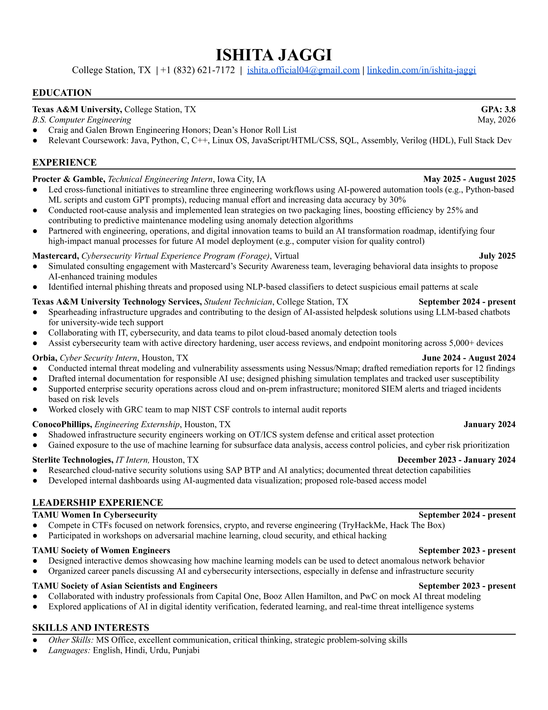

Qualifications
I am a motivated Computer Engineering student at Texas A&M University with a strong interest in
software development and problem solving. What draws me to these fields is the unique blend of logic,
creativity, and continuous learning they demand. I enjoy the challenges that come with these fields
and designing elegant, efficient solutions, especially when those solutions have the potential to
improve lives or streamline everyday tasks. Whether it's building intuitive user experiences or
optimizing backend systems, I'm eager to apply my technical skills, learn from real-world experiences,
and contribute to innovative projects that make a meaningful impact.
Resume - click to download

Experience
Procter & Gamble - Technical Engineering Intern
- Integrated AI-powered automation tools to streamline workflows and support predictive maintenance
Texas A&M IT - Student IT Technician
- Led infrastructure upgrades, supported cybersecurity ops (AD, endpoint security), and piloted LLM-based helpdesk tools
Orbia - Cybersecurity Intern
- Performed vulnerability scans, SIEM alert triage, phishing simulations, and supported NIST CSF compliance
MasterCard - Cybersecurity Virtual Experience
- Designed AI-driven phishing detection methods and security awareness training modules
Sterlite Technologies - IT Intern
- Researched SAP BTP cloud security tools and created dashboards with access control recommendations
ConocoPhillips - Engineering Externship
- Observed ICS/OT security operations and ML applications in cyber risk prioritization
Skills
Java
Python
C
C++
Linux OS
JavaScript
HTML
CSS
SQL
Verilog (HDL)
Analog Devices
© 2025 Ishita Jaggi